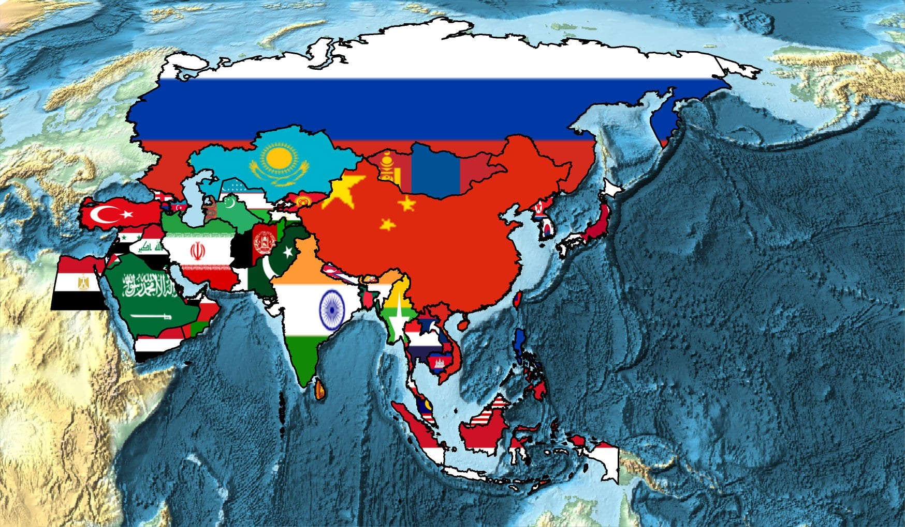
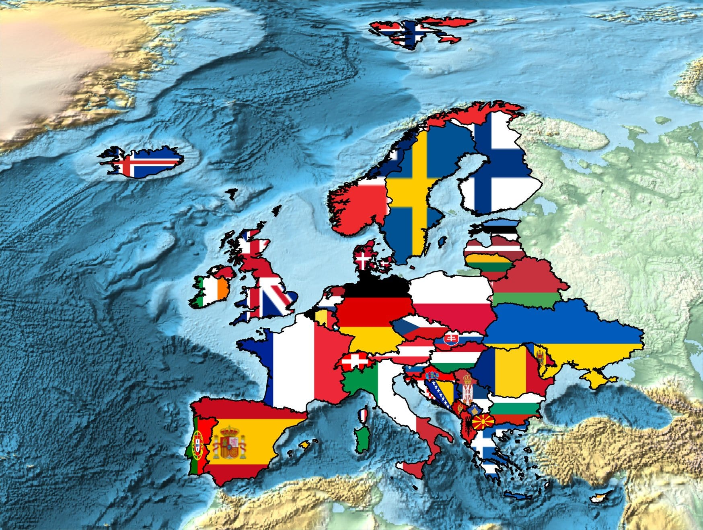
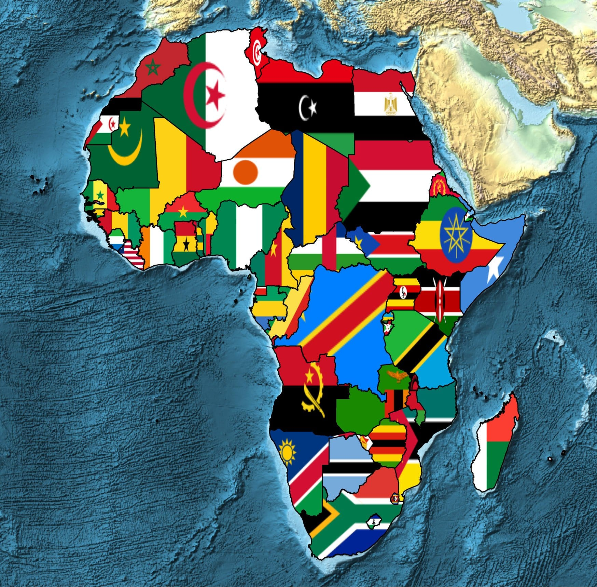

Ekte ülkemizin kesişiminde olduğu üç kıtanın ülkelerinin bayrakları
şeklindeki resmini görebilirsiniz. Resimleri Mathematica ile çizdirdim, bu
tarz resimleri kendiniz de rahatlıkla çizdirebilmeniz için en az bir
programlama dili tavsiye olunur



Örnek olarak Afrika için kullanılan kod:
GeoGraphics[{EdgeForm[Black],{GeoStyling[{"Image",#2}],Polygon[#1]}&@@@EntityValue[EntityClass["Country","Africa"],{"Entity","FlagImage"}]},GeoBackground->"ReliefMap",GeoProjection->"Robinson",ImageSize->Large]